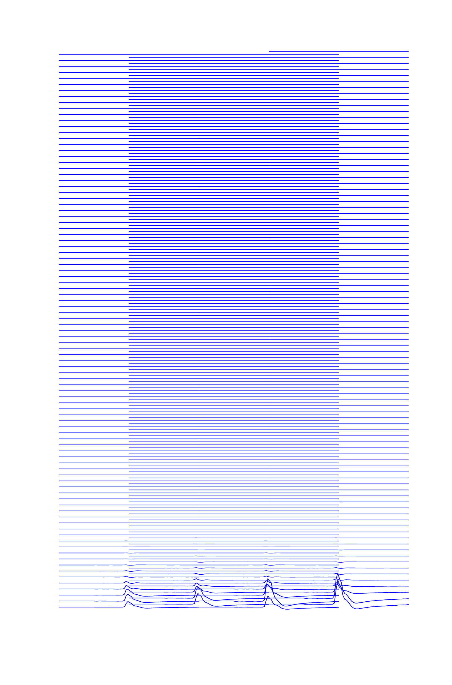
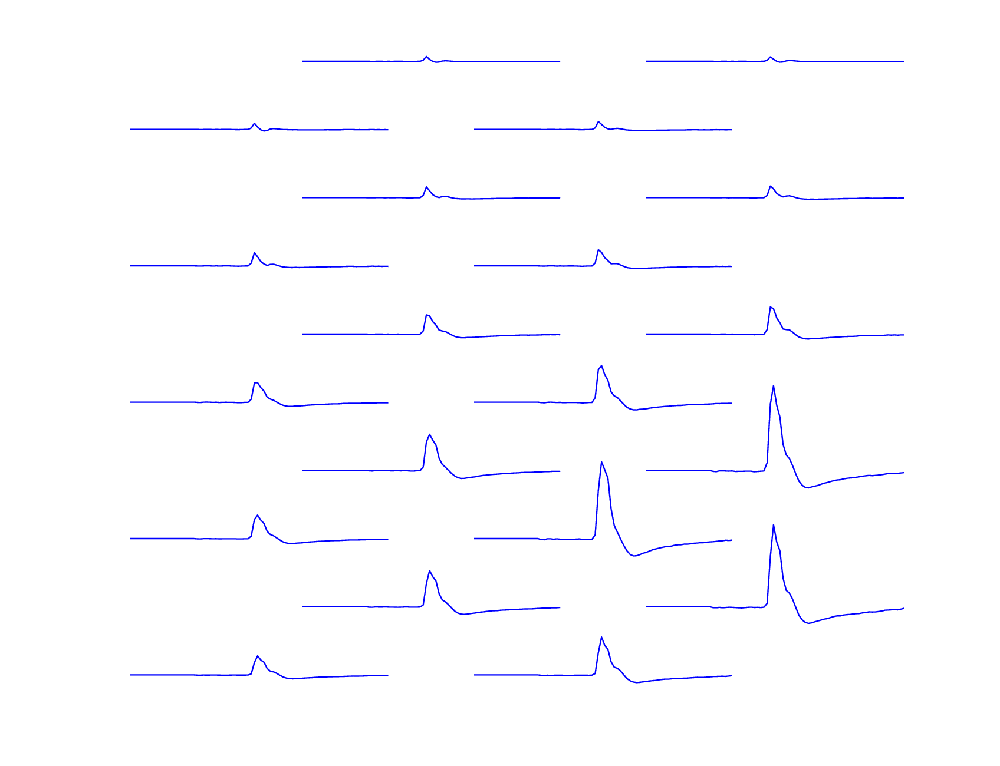

Analysis of Kilosort Results¶
Simple statistics¶
Simple statistics for a KilosortDataset can be computed / printed using:
>> stats = ks.computeBasicStats();
>> ks.printBasicStats();
neuropixel_01: 3747.1 sec, 8181228 (6974070) spikes, 592 (187) clusters (with fr > 3 Hz)
>> stats
stats =
struct with fields:
spike_clusters: [8181228×1 uint32]
cluster_ids: [592×1 uint32]
offset: 0
sample_rate: 30000
spike_times: [8181228×1 uint64]
nSpikes: 8181228
nClusters: 592
nSec: 3.7471e+03
fr: [1×591 double]
thresh: 3
clusterMask: [1×591 logical]
nClustersAboveThresh: 187
nSpikesAboveThresh: 6974070
KilosortMetrics¶
More computed statistics can be computed on demand by calling
metrics = ks.computeMetrics();
which returns a Neuropixel.KilosortMetrics instance. This is a catch-all class for storing all the statistics we want to compute about the results of a Kilosort run. At the moment, most of these properties are related to localizing spikes / templates / clusters in spatial coordinates on the probe. The details of these computations borrow heavily from code written by Nick Steinmetz described on the Neuropixels wiki.
Many properties are computed for each cluster, for each template (as multiple templates may comprise each cluster), and for each individual spike.
- Spatial location properties end in
_centerOfMass, and have x,y (and someday z) along the second dimension depthproperties are shorthands for theyspatial dimension ofcenterOfMasswaveformproperties store the template-derived waveform taken from the largest channelbest_channelsproperties indicate which channels best capture the electrical image of a given template or cluster. *amplitudeproperties are already in uVis_localizedproperties indicate whether the electrical image is sufficiently well localized in space
KilosortMetrics with properties:
ks: [1×1 Neuropixel.KilosortDataset]
nSpikes: 8181228
nChannelsSorted: 371
nTemplates: 653
nTemplateTimepoints: 82
nClusters: 592
nConcatenatedFiles: 1
maxTemplatesPerCluster: 11
fs: 30000
channelMap: [1×1 Neuropixel.ChannelMap]
channel_ids: [nChannelsSorted × 1 uint32]
concatenatedSamples: 112412208
concatenatedStarts: 1
concatenatedNames: "neuropixel_01"
template_unw: [nTemplates × nTemplateTimepoints × nChannelsSorted single] % unwhitened templates in original data scale
template_scaled: [nTemplates × nTemplateTimepoints × nChannelsSorted single] % unwhitened, scaled templates in uV
template_centerOfMass: [nTemplates × 2 single]
template_is_localized: [nTemplates × 1 logical]
template_waveform: [nTemplates × nTemplateTimepoints single]
template_waveform_ch: [nTemplates × 1 uint32]
template_amplitude: [nTemplates × 1 single]
template_ttp: [nTemplates × 1 single]
template_best_channels: [nTemplates × nChannelsSorted uint32]
spike_times: [nSpikes × 1 uint64]
spike_amplitude: [nSpikes × 1 single]
spike_centerOfMass: [nSpikes × 2 single] % x, y
spike_templates: [nSpikes × 1 uint32]
spike_clusters: [nSpikes × 1 uint32]
spike_depth: [nSpikes × 1 single]
spike_is_localized: [nSpikes × 1 logical]
cluster_ids: [nClusters × 1 uint32]
cluster_template_mostUsed: [nClusters × 1 uint32]
cluster_template_list: {nClusters × 1 cell}
cluster_template_useCount: [nClusters × nTemplates uint64]
cluster_num_templates: [nClusters × 1 uint32]
cluster_best_channels: [nClusters × nChannelsSorted uint32]
cluster_centerOfMass: [nClusters × 2 single] % x, y
cluster_is_localized: [nClusters × 1 logical]
cluster_waveform: [nClusters × nTemplateTimepoints × maxTemplatesPerCluster single]
cluster_waveform_ch: [nClusters × nClusters uint32]
cluster_amplitude: [nClusters × 1 single]
cluster_ttp: [nClusters × 1 single]
cluster_depth: [nClusters × 1 single]
```
Plotting drift maps¶
A drift map plots the spatial depth of all spikes over time as individual dots, where the dot color darkness increases for large amplitude spikes, allowing the eye to follow bands of spikes over time. The code for generating this plot was largely copied from the Cortex lab spikes repo and modified to use the KilosortMetrics structure and add some additional metadata.
You can plot a standard driftmap using:
matlab
metrics.plotDriftmap();

Significant drift events are marked in red in the raster and shown as red ticks above. You can set the driftThreshold in µm for drift events as a parameter, as well as lower the threshold for spike amplitude quantile to include smaller spikes in the calculation:
metrics.plotDriftmap('driftThreshold', 4, 'spikeAmpQuantile', 0.8);

If you have computed trial segmentation boundaries stored in a TrialSegmentationInfo instance, you can pass them in to show the trial boundaries as blue ticks at the bottom.
metrics.plotDriftmap('tsi', tsi);

As you can see, the vertical bands where spiking activity looks very different from other timepoints occur when no trials were present. Indeed, these were time periods where the task was paused and the subject was asleep. We can mask out these regions to better assess drift over the time periods we’re most concerned with:
metrics.plotDriftmap('tsi', tsi, 'maskRegionsOutsideTrials', true);

Or we can excise those regions of time for plotting purposes only, to simulate what would happen if we excised those regions during pre-processing. Locations where timepoints are spliced together are indicated using magenta lines.
metrics.plotDriftmap('tsi', tsi, 'exciseRegionsOutsideTrials', true);

Plotting cluster drift maps¶
The driftmaps can help the eye spot points where spikes shift in space, but they do not indicate where Kilosort may have split a cluster over time. metrics.plotClusterDriftmap is similar to plotDriftmap except that it colors each dot according to cluster id. For these plots, it is helpful to subselect a subset of cluster ids to keep the plots from being too dense. Cluster ids tend to be roughly in order along the probe because of Kilosort’s algorithm, so be sure to sample uniformly over the cluster ids when subselecting.
cluster_ids = metrics.cluster_ids(1:5:metrics.nClusters);
metrics.plotDriftmap('tsi', tsi, 'exciseRegionsOutsideTrials', true, 'cluster_ids', cluster_ids);

Hover over tool tips
For these plots, in newer versions of Matlab, you can hover over points in the plot to see a popup tooltip that will display information about the cluster to which that point belongs.
You can also tweak the colors of each cluster so that larger amplitude clusters appear brighter using 'colorByAmp', true.
metrics.plotDriftmap('tsi', tsi, 'exciseRegionsOutsideTrials', true, 'cluster_ids', cluster_ids, 'colorByAmp', true);

By default, larger clusters are plotted on top, but you can randomize the plotting order using 'zShuffleClusters', true. Instead of plotting each individual spike, you can plot a smoothed estimate of cluster depth by passing 'showSmooth', true, 'showIndividual', false:
metrics.plotDriftmap('tsi', tsi, 'exciseRegionsOutsideTrials', true, 'cluster_ids', cluster_ids, ...
'showSmooth', true, 'showIndividual', false, 'smoothWidthSeconds', 50);

Plotting cluster centers of mass¶
To see the distribution of cluster waveforms over the probe:
metrics.plotClusterWaveformAtCenterOfMass()

Hover over tool tips
For these plots, in newer versions of Matlab, you can hover over waveforms in the plot to see a popup tooltip that will display information about the cluster to which that waveform belongs.

Plotting electrical images¶
You can plot the electrical image of each cluster’s templates (or an individual template) as well, using ymag and xmag to zoom in after normalizing.
cluster_id = 10;
metrics.plotClusterImage(cluster_id, 'ymag', 10, 'xmag', 2)

Rather than plotting every channel, you can select the best N contiguous channels:
metrics.plotClusterImage(cluster_id, 'best_n_channels', 20);
